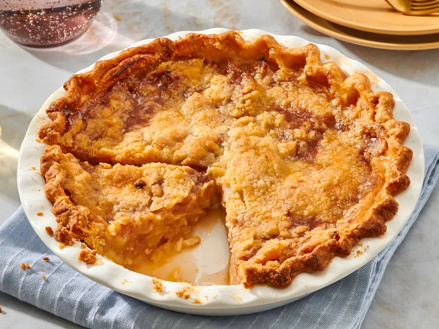

Dutch Apple Pie

The classic Dutch apple pie is perfect for the winter Season.
Topped with ice cream is unmatched agaisnt any desserts.
Ingredients
- 1(9inch) unbaked pie crust
- 5 large Granny Smith apples-peeled, cored and sliced
- 1/2 cup white sugar
- 2 tablespoons all-purpose flour
- 1/2 teaspoon ground cinnamon
- 2 tablespoons lemon juice
- 1/2 cup white sugar
- 1/2 cup all-purpose flour
- 1/2 cup cold butter, cubed
- Gather all ingredients. Preheat the oven to 425 F
- Arrange pastry in the bottom of a 9-inch pie pan. place
apples in crust.
- Mix 1/2 cup sugar, 2 tablespoons flour, and cinnamon together
in a bowl; pour over apples in crust. Sprinkle lemon juice on top.
- To make the crumble topping:Place 1/2 cup sugar and 1/2 cup flour
in a bowl.Cut cold butter with 2 knives or pastry blender until
the mixture resembles coarse crumbs;sprinkle crumble mixture evenly
over apples.
- Take two 15-inch pieces of parchment paper and enclose pie;
fold edges up 3 times.Place on a baking sheet.
- Bake in the preheated oven, without opening the parchment, for
1 hour.Remove from oven, split parchment open, and cool pie on a wire rack.